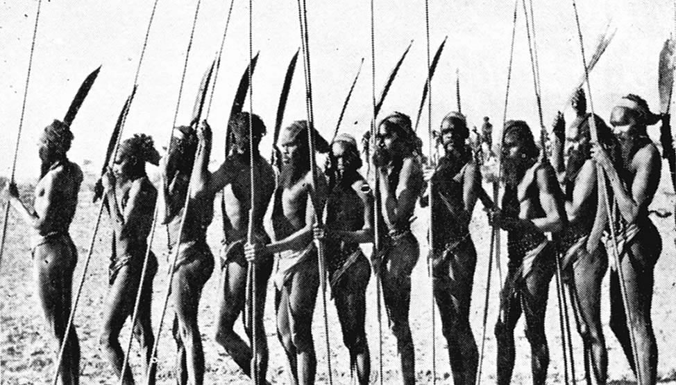

Aboriginal Australians
From Wikipedia, the free encyclopedia

Group of Warriors from the tribes west of Hermannsburg, Central Australia. Photographs of Australian Aborigines, Aborigine’s Friends’ Association, Adeleaide 1936. Image: Ivan Copely
Legal and administrative definitions
The category “Aboriginal Australians” was coined by the British after they began colonising Australia in 1788, to refer collectively to all people they found already inhabiting the continent, and later to the descendants of any of those people. Until the 1980s, the sole legal and administrative criterion for inclusion in this category was race.
“In the era of colonial and post-colonial government, access to basic human rights depended upon your race. If you were a “full blooded Aboriginal native ... [or] any person apparently having an admixture of Aboriginal blood”, a half-caste being the "offspring of an Aboriginal mother and other than Aboriginal father" (but not of an Aboriginal father and other than Aboriginal mother), a “quadroon”, or had a “strain” of Aboriginal blood you were forced to live on Reserves or Missions, work for rations, given minimal education, and needed governmental approval to marry, visit relatives or use electrical appliances.”
The Constitution of Australia, in its original form as of 1901, referred to Aborigines twice but without definition. Section 51(xxvi) gave the Commonwealth parliament power to legislate with respect to “the people of any race” throughout the Commonwealth, except for people of “the aboriginal race”. The purpose of this provision was to give the Commonwealth power to regulate non-white immigrant workers, who would follow work opportunities interstate. The only other reference, Section 127, provided simply that “aboriginal natives shall not be counted” in reckoning the size of the population of the Commonwealth or any part of it.
Names used by Australian Aboriginal people
There are a number of other names from Australian Aboriginal languages commonly used to identify groups based on geography, including:
- Anangu in northern South Australia, and neighbouring parts of Western Australia and Northern Territory
- Bama in north-east Queensland
- Koori (or Koorie or Goori or Goorie) in New South Wales and Victoria
- Murri in southern Queensland
- Noongar in southern Western Australia
- Nunga in southern South Australia
- Palawah (or Pallawah) in Tasmania

Aboriginal dwellings in Hermannsburg, Northern Territory, 1923. Image: Herbert Basedow.